Our group has also been actively working on a large variety of international large programs with friendly collaborators across the world.
PI: S. Fujimoto, D. Coe
Large program of JWST's first wide lensing cluster survey to explore the earliest galaxies, AGNs, stars and their explosions.
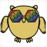
PIs: A. Muzzin, D. Marchesini, K. Suess
Large program to perform monogeneous NIRCam medium-band imaging for JWST legacy fields of CEERS, PRIMER-UDS & COSMOS, and GOODS-N.
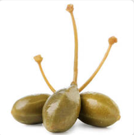
PI: M. Dickinson
Large program to perform NIRSpec MSA prism spectroscopy of hundreds z>9 galaxies in legacy CANDELS fields.
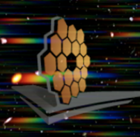
PIs: K. Kakiichi, X. Fan, F. Wang, E. Egami, J. Lyu
Large program to perform NIRCam imaging and slitless spectroscopy over the COSMOS‑Web field to study early galaxies, AGNs, and cosmic reionization.
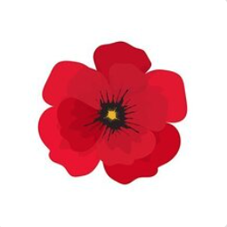
PIs: J. Kartaltepe & M. Rafelski
Wide‑field pure-parallel NIRCam slitless spectroscopy survey (~1455arcmin²) probing emission‑line galaxies in blank fields.
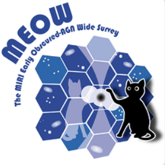
PIs: G. Leung, S. Finkelstein, R. Endsley
Medium program to perform MIRI imaging survey searching for obscured AGNs in the early universe.
PIs: H. Atek & J. Chisholm
Large program to perform the deepest NIRCam survey by gaining >100hrs exposure for a sinlge lensing cluster field.
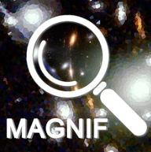
PI: F. Sun
Medium program to perform NIRCam slitless spectroscopy using medium band filters towards the best-studied Hubble Frontier Field lensing clusters.
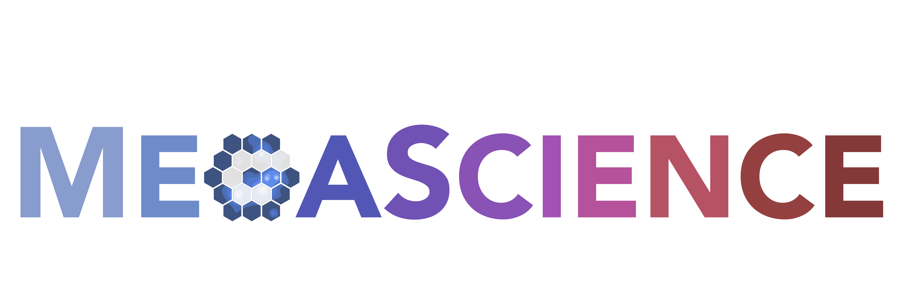
PI: K. Suess
Medium program to perform NIRCam imaging using all meidum-band filters for lensed ~50,000 galaxies over z~0.3–12 to study galaxy evolution statistically.
PIs: I. Labbe & R. Bezanson
Treasury program to achieve an efficient, strategetic NIRCam + NIRSpec survey towards the best studied lensing cluster field, Abell 2744.
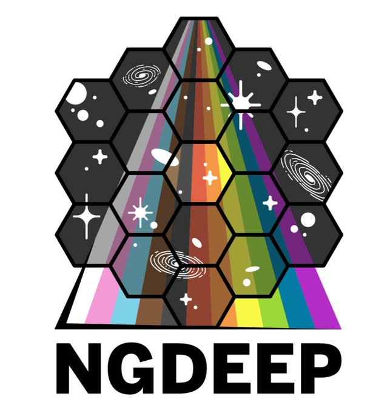
PIs: S. Finkelstein, C. Papovich, N. Pirzkal
Large program to perform the deepest blank-field NIRCam survey, coordinated with NIRISS slit-less spectroscopy.
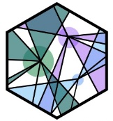
PIs: J. Kartaltepe & C. Casey
Large program to perform the large-area (~0.5deg²) homogeneous NIRCam mapping to unveil the early structure formation in the COSMOS field.
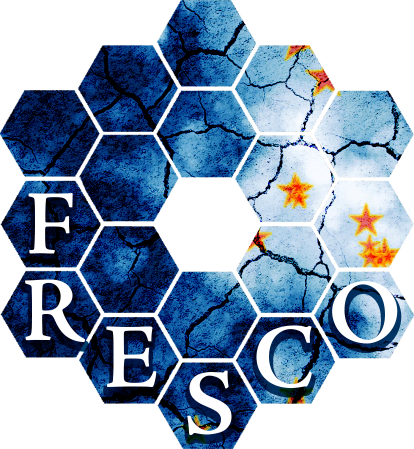
PI: P. Oesch
Treasury program to perform slitless NIRCam spectroscopic survey towards the GOODS-N and GOOD-S fields.
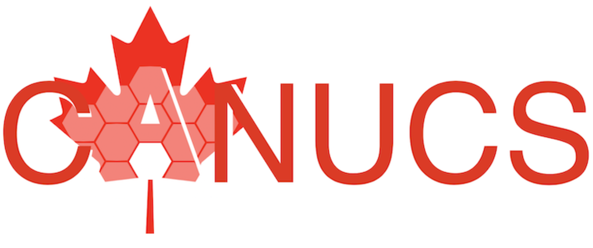
PI: C. Willott
JWST GTO survey using cluster lensing to study faint galaxies and early galaxy evolution.
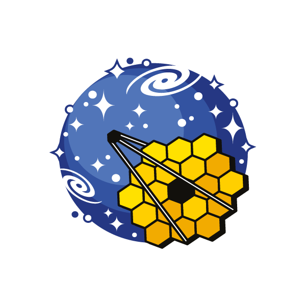
PI: S. Finkelstein
Early Release Science survey using NIRCam, MIRI, NIRSpec to chart galaxy formation and evolution in the early Universe.
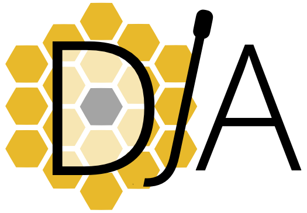
PI: G. Brammer
Releasing public archive resources to the community via automated processing of JWST imaging and spectroscopic data taken in major extragalactic surveys.
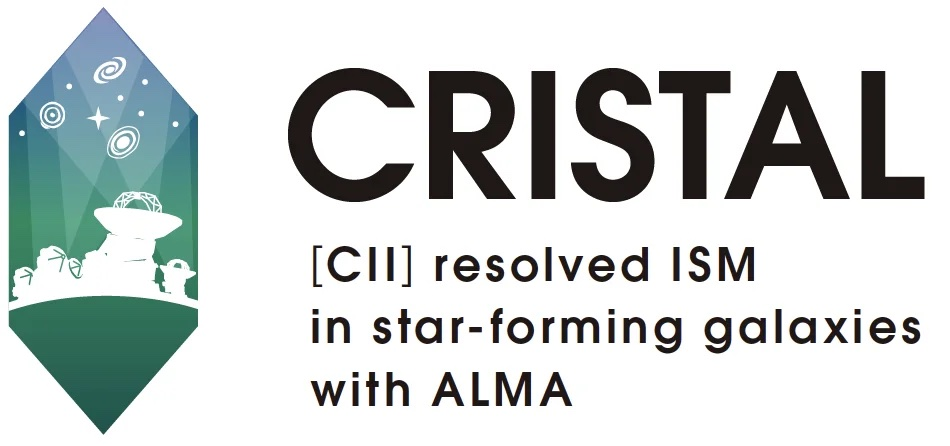
PI: R. Herrera-Camus
Large program to study resolved ISM in distant star-forming galaxies by peforming high-resolution deep follow-up for 18 ALPINE galaxies.
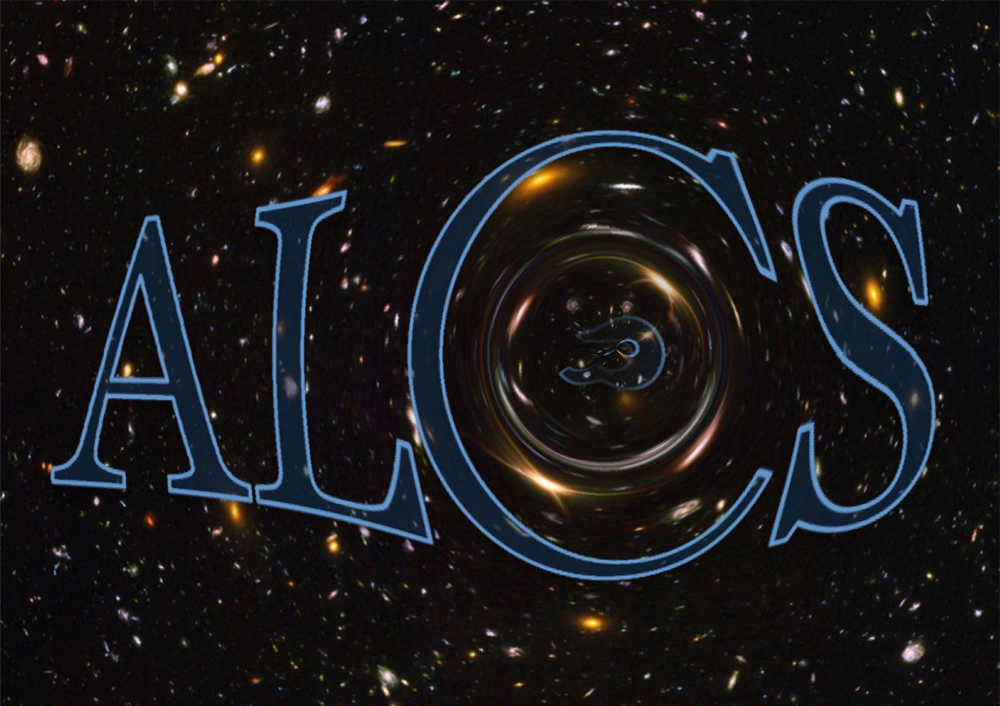
PI: K. Kohno
Large program to 1-mm homogeneous mapping for 33 massive lensing clusters to investigate dust and gas in distant galaxies.
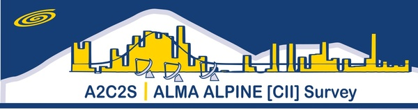
PI: O. Le Fèvre
Large Program to investigate [CII] and dust emission in the early universe, targeting 118 main-sequence galaxies at z~4-6.
Global distribution of our close collaborators/institutes involved in the past 5 years.